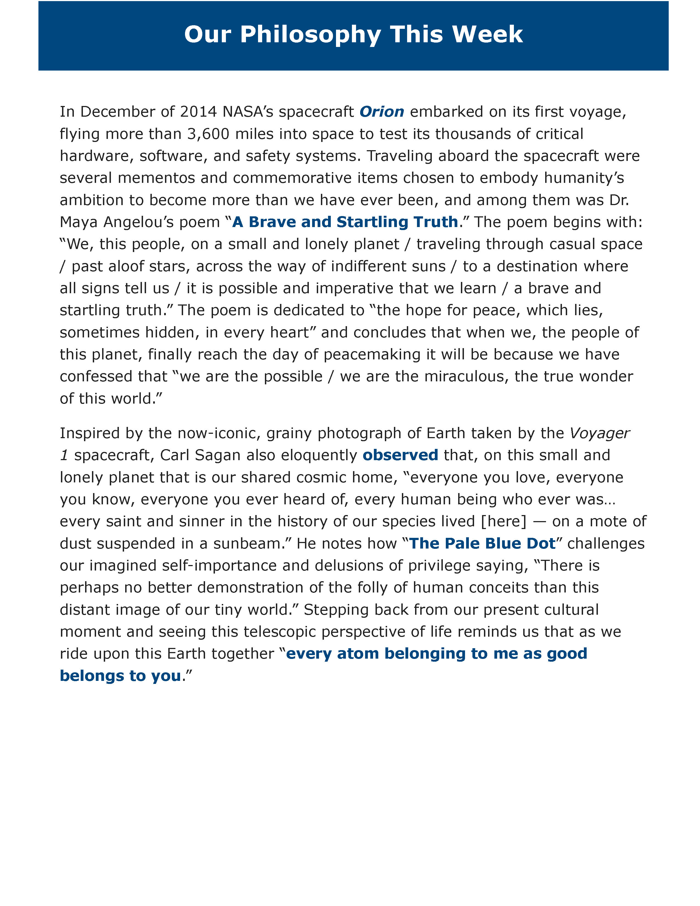
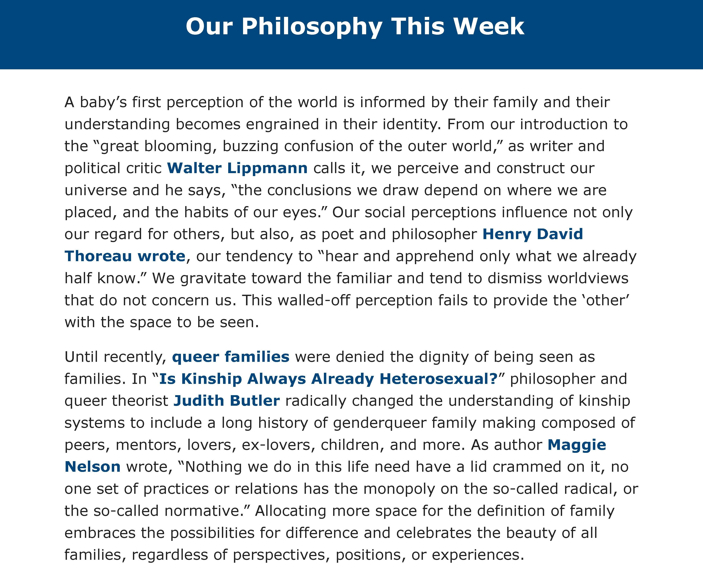

creative copywriting
2021 winter fundraising appeal letter
Click to read
Website Hero Image Blurb
×
❮
❯
2021 Winter Appeal Letter
Dear (Informal Salutation)
Thank you for recognizing the value of conversations and stories in building stronger, more resilient communities throughout our state. Our work is about more than the number of grants we have supported, programs we have delivered, or regions we have served. Our work is about you—our fellow Montanans—and the endless opportunities you spark when you gather with your family, friends, and neighbors to share ideas and tell your stories.
As Humanities Montana approaches its golden anniversary, we are inspired by the enduring cultural legacy that your passion, curiosity, and spirit have catalyzed. The opportunities you have created are realized every time a cultural organization submits a grant application, a teacher books a humanities program for their classroom, or a community book club receives funding. For 49 years we have been dedicated to connecting Montanans through the humanities and creating a better Montana for the next generation.
You are vital to this work. We depend on your ideas, wisdom, and support to guide us as our communities’ needs evolve. We would like to extend our gratitude for your unwavering commitment to inspiring one another.
Your continued support is essential to helping Montana thrive. We hope you will consider giving a gift.
May you and your loved ones share a warm and wonderful holiday season!
With gratitude,
Randi Lynn Tanglen, Ph.D.
Executive Director
Celebrating and Sustaining the Humanities
It could be said that the western meadowlark, Montana’s state bird, inspires self-discovery, much like the humanities do. Its commanding and rich flute-like melody persuades us to pause and reflect inwardly on our personal journey. Both the humanities and the western meadowlark encourage us to explore our inner world and to sing out and celebrate our discoveries.
Weekly Digital Humanities e-newsletter: philosophy perspective
In December of 2014 NASA’s spacecraft Orion embarked on its first voyage, flying more than 3,600 miles into space to test its’ thousands of critical hardware, software, and safety systems. Traveling aboard the spacecraft were several mementos and commemorative items chosen to embody humanity’s ambition to become more than we have ever been, and among them was Dr. Maya Angelou’s poem “A Brave and Startling Truth.” The poem begins with: “We, this people, on a small and lonely planet, traveling through casual space, past aloof stars, across the way of indifferent suns, to a destination where all signs tell us, it is possible and imperative that we learn, a brave and startling truth”. The poem is dedicated to “the hope for peace, which lies, sometimes hidden, in every heart” and concludes that when we, the people of this planet, finally reach the day of peacemaking it will be because we have confessed that “we are the possible, we are the miraculous, the true wonder of this world.”
Inspired by the now-iconic, grainy photograph of Earth taken by the Voyager 1 spacecraft, Carl Sagan also eloquently observed that, on this small and lonely planet that is our shared cosmic home, “everyone you love, everyone you know, everyone you ever heard of, every human being who ever was…every saint and sinner in the history of our species lived [here] — on a mote of dust suspended in a sunbeam.” He notes how “The Pale Blue Dot” challenges our imagined self-importance and delusions of privilege saying, “There is perhaps no better demonstration of the folly of human conceits than this distant image of our tiny world.” Stepping back from our present cultural moment and seeing this telescopic perspective of life reminds us that as we ride upon this Earth together “every atom belonging to me as good belongs to you.”
Weekly Digital Humanities e-newsletter: philosophy perspective
A baby’s first perception of the world is informed by their family and their understanding becomes engrained in their identity. From our introduction to the “great blooming, buzzing confusion of the outer world,” as writer and political critic Walter Lippmann calls it, we perceive and construct our universe and he says, “the conclusions we draw depend on where we are placed, and the habits of our eyes.” Our social perceptions influence not only our regard for others, but also, as poet and philosopher Henry David Thoreau wrote, our tendency to “hear and apprehend only what we already half know.” We gravitate toward the familiar and tend to dismiss worldviews that do not concern us. This walled-off perception fails to provide the ‘other’ with the space to be seen.
Until recently, queer families were denied the dignity of being seen as families. In “Is Kinship Always Already Heterosexual?” queer theorist Judith Butler radically changed the understanding of kinship systems to include a long history of genderqueer family making composed of peers, mentors, lovers, ex-lovers, children, and more. As author Maggie Nelson wrote, “Nothing we do in this life need have a lid crammed on it, no one set of practices or relations has the monopoly on the so-called radical, or the so-called normative.” Allocating more space for the definition of family embraces the possibilities for difference and celebrates the beauty of all families, regardless of perspectives, positions, or experiences.
It could be said that the western meadowlark, Montana’s state bird, inspires self-discovery, much like the humanities do. Its commanding and rich flute-like melody persuades us to pause and reflect inwardly on our personal journey. Both the humanities and the western meadowlark encourage us to explore our inner world and to sing out and celebrate our discoveries.

One of my 25+ "Our Philosophy Perspective" writings from a weekly pandemic e-newsletter

Additional sample of the weekly e-newsletter philosophy writings.